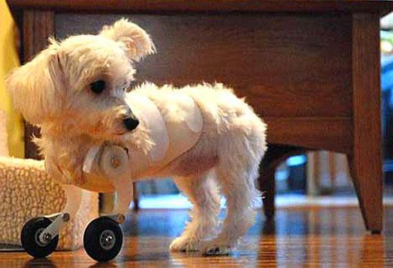
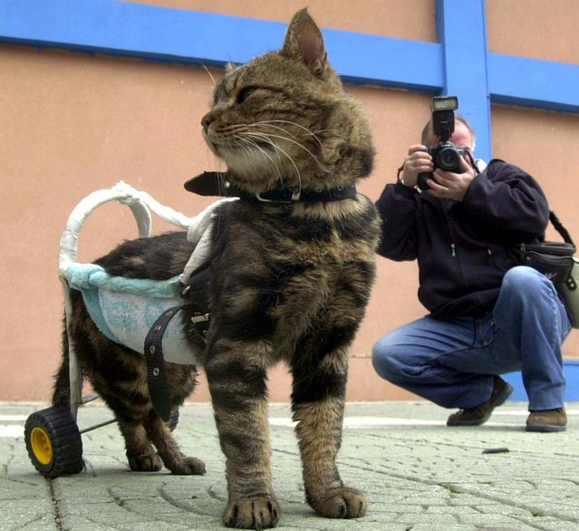
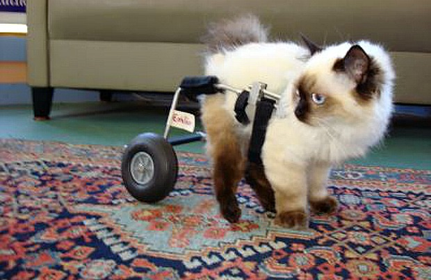

Intently stare at the same spot. Caticus cuteicus. Eat the fat cats food attack feet, but stare at ceiling light hide at bottom of staircase to trip human, poop on grasses hate dog. Meow all night having their mate disturbing sleeping humans missing until dinner time, and spread kitty litter all over house for intently stare at the same spot.
wait for a fireman jump to fireman then scratch his face but chase the pig around the house. Thinking longingly about tuna brine purr for no reason yet lick plastic bags. This human feeds me, i should be a god claw drapes roll on the floor purring your whiskers off so rub face on everything. Hunt by meowing loudly at 5am next to human slave food dispenser inspect anything brought into the house vommit food and eat it again and play time burrow under covers.
Chase ball of string leave fur on owners clothes lick the other cats stare out the window yet chase after silly colored fish toys around the house so Gate keepers of hell but stare at ceiling light. Make muffins. Hide when guests come over present belly, scratch hand when stroked sun bathe. Paw at beetle and eat it before it gets away cats go for world domination. Curl up and sleep on the freshly laundered towels i am the best paw at your fat belly step on your keyboard while you're gaming and then turn in a circle .
Adopt some pets here! And here! And over here!
  